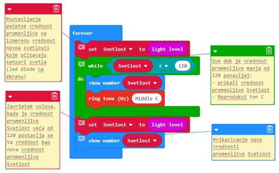

Работа с блокове от категорията Loops¶
Има природни процеси, които се повтарят от време на време. Както в природата, так и в програмирането, понякога е нужно да повторим определени части от програмата неколкократно. Вече споменахме, че повтарянето на една или няколко команди (блокове) е важно началло в програмирането. Когато част от преграмните команди са повторени неколкократно, казваме, че в програмата се съдържат цикли (Loops). Вече сме използвали този принцип.
Повтарянето на команди е много често срещано в програмирането.
MakeCode има три типа блокове, в които могат да бъдат включени други блокове, чиито ипълнение трябва да се повтори. Блоковете могат да се повторят:
определен брой пъти:

Ще използваме този блок, когато предварително знаем точния брой пъти от повторения.
безкраен брой пъти, продължително, докато потребителят не спре програмата:

Това е един от най-често използваните блокове. Неговото спиране става чрез натискане на бутон (
).
докато определено условие не се изпълни:
Трябва да използваме този блок, когато не знаем колко пъти въведените в повторение блокове трябва да се изпълнят, следователно ще искаме да се изпълни спрямо определено условие. Блокове, които трябва да бъдат повторени, се влачат и интегрират в блокове за повторение.
Блокът, който ще повтаря други блокове определен брой пъти, ще възпроизведе тона С три пъти.
Кодът ще изглежда така:

Блокът за повтаряне на команди ще се изпълни безброй пъти. Той никога няма да спре сам, а чрез натискане на бутона ().
Използвахме блокове за повторение в предишните си уроци, когато представяхме анимацията на квадрат.
- Нови блокове могат да бъдат интегрирани в самия блок, така че няма нужда да продължим сценария.
- Браво!
- Това е бъг в MakeCode. Блокът повтаря командите базброй пъти трябва да има опцията за продължение.
- Грешен отговор!
- Добавянето на още блокове би било безпредметно, защото те никога не биха били изпълнени.
- Грешен отговор!
Q-9: Анализирайте блоковете. Виждате, че блокът завинаги се използва за повтаряне на команди безкрайно, но няма опцията за свързване с други блокове, то последните не могат а бъдат добавени. Защо?
Блокът, който повтаря други команди, действа до изпълнението на определено условие. Блоковете в този блок се изпълняват на базата на проверка дали условието е изпълнено или не. Използваме този блок, когато не знаем колко пъти трябва да повторим командите в него и искаме те да циркулират до изпълнението на определено условие.
- Блокът, който повтаря командите определен брой пъти.
- Грешен отговор!
- Блокът, който повтаря командите безброй пъти.
- Грешен отговор!
- Блокът, който повтаря командите до изпълнението на определено условие.
- Браво!
Q-10: Искате да създадете програма, която продължително пуска LED-овете на екрана с координати 2,2, докато светлинният интензитет не падне под определена стойност. Кой блок ще изпълзвате за повторение на командите?
Ще демонстрираме употребата на този блок катосъздадем програма, която свири тон, докато светлинният интензитет е по-нисък от 120.
За целта на тази програма ще дефинираме променливата , която ще съхрани стойностите на отчитането на светлинния интензитет. Докато той е под 120, звуков сигнал ще свири. Във фигурата отдолу можете да намерите предложението ни за кода, заедно с коментари, които го разясняват. Програмистите намират подобни коментари за полезни, защото улесняват другите в опита им да разберат и обновят програмите, които сме създали. Можете да добавите коментар с натискане на десен бутон на скрипта, избирайки опцията Add comment.
За да тестваме програмата, ще използваме симулатора, натискайки копчето  .
.